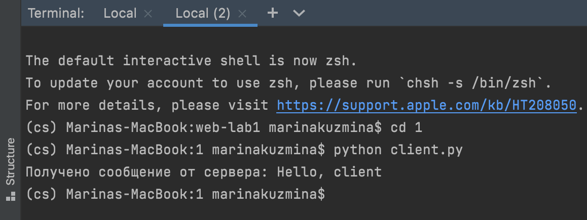
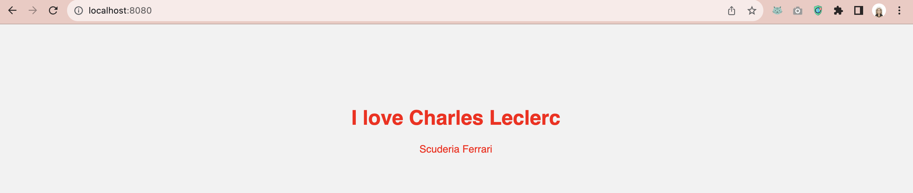
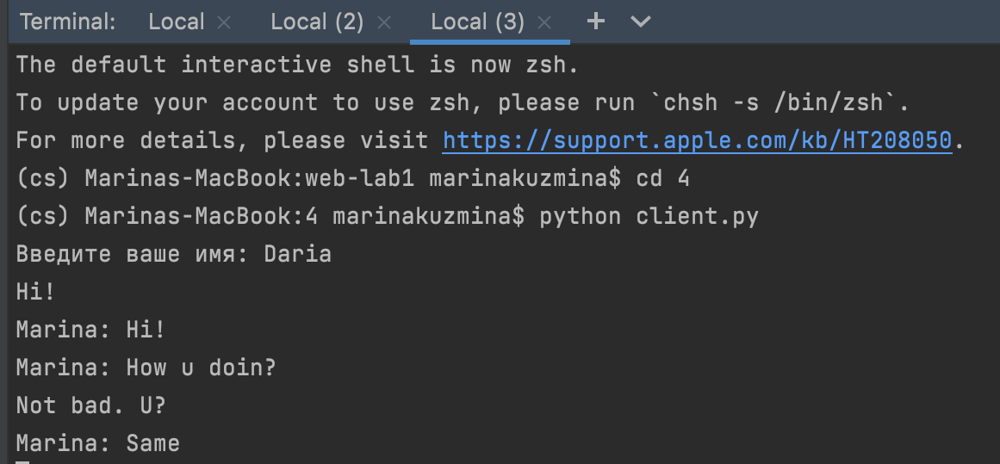
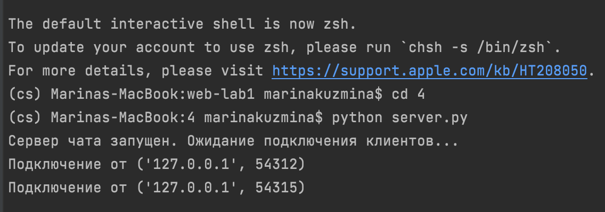
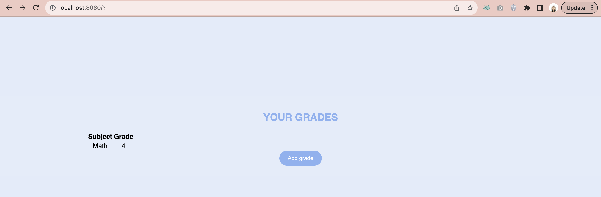

Лабораторная работа 1
РАБОТА С СОКЕТАМИ
Intro
Цель: овладеть практическими навыками и умениями реализации web-серверов и использования сокетов.
Оборудование: компьютерный класс.
Программное обеспечение: Python 2.7-3.6, библиотеки Python: sys, socket.
Задание 1
Реализовать клиентскую и серверную часть приложения. Клиент отсылает серверу сообщение «Hello, server». Сообщение должно отразиться на стороне сервера. Сервер в ответ отсылает клиенту сообщение «Hello, client». Сообщение должно отобразиться у клиента. Обязательно использовать библиотеку socket. Реализовать с помощью протокола UDP.
Код:
# server.py
import socket
# Создаем UDP-сервер
server_socket = socket.socket(socket.AF_INET, socket.SOCK_DGRAM)
server_address = ('localhost', 12345)
server_socket.bind(server_address)
while True:
print("Ожидание сообщения от клиента...")
data, client_address = server_socket.recvfrom(1024)
print(f"Получено сообщение от клиента: {data.decode()}")
response = "Hello, client"
server_socket.sendto(response.encode(), client_address)
- Создается UDP-сервер с использованием библиотеки socket.
- Устанавливается адрес сервера (server_address), который указывает на локальный хост (localhost) и порт 12345.
- UDP-сокет привязывается к указанному адресу с помощью server_socket.bind(server_address).
- Затем сервер начинает бесконечный цикл (while True) и ожидает прихода сообщений от клиентов.
- Когда сервер получает сообщение от клиента, оно считывается с помощью server_socket.recvfrom(1024). Здесь 1024 - максимальный размер данных, которые можно получить за один раз.
-
После получения сообщения, сервер отправляет ответное сообщение ("Hello, client") обратно клиенту с помощью server_socket.sendto(response.encode(), client_address).
# client.py import socket # Создаем UDP-клиента client_socket = socket.socket(socket.AF_INET, socket.SOCK_DGRAM) server_address = ('localhost', 12345) message = "Hello, server" client_socket.sendto(message.encode(), server_address) data, server_address = client_socket.recvfrom(1024) print(f"Получено сообщение от сервера: {data.decode()}") client_socket.close() -
Создается UDP-клиент с использованием библиотеки socket.
- Устанавливается адрес сервера (server_address), который указывает на локальный хост (localhost) и порт 12345.
- Клиент создает сообщение (message), в данном случае "Hello, server", и отправляет его серверу с помощью client_socket.sendto(message.encode(), server_address).
- Затем клиент ожидает ответное сообщение от сервера, которое получается с помощью client_socket.recvfrom(1024).
- Полученное сообщение ("Hello, client") декодируется и выводится на экран.
- Наконец, клиент закрывает сокет с помощью client_socket.close().

Задание 2
Реализовать клиентскую и серверную часть приложения. Клиент запрашивает у сервера выполнение математической операции, параметры, которые вводятся с клавиатуры. Сервер обрабатывает полученные данные и возвращает результат клиенту. Варианты:
a. Теорема Пифагора b. Решение квадратного уравнения. c. Поиск площади трапеции. d. Поиск площади параллелограмма.
Вариант выбирается в соответствии с порядковым номером в журнале. Пятый студент получает вариант 1 и т.д. Обязательно использовать библиотеку socket. Реализовать с помощью протокола TCP
Код:
# server.py
import socket
# Создаем TCP-сервер
server_socket = socket.socket(socket.AF_INET, socket.SOCK_STREAM)
server_address = ('localhost', 12345)
server_socket.bind(server_address)
server_socket.listen(1)
print("Сервер запущен. Ожидание подключения клиента...")
while True:
client_connection, client_address = server_socket.accept()
print(f"Подключение от клиента {client_address}")
# Принимаем данные от клиента
data = client_connection.recv(1024).decode()
print(f"Получено сообщение от клиента: {data}")
# Разбираем данные и выполняем математическую операцию (теорема Пифагора)
try:
a, b = map(float, data.split(','))
c = (a ** 2 + b ** 2) ** 0.5
response = f"Гипотенуза (c) равна {c}"
except ValueError:
response = "Ошибка: Некорректные данные"
# Отправляем результат клиенту
client_connection.send(response.encode())
client_connection.close()
- Создается TCP-сервер с использованием библиотеки socket.
- Устанавливается адрес сервера (server_address), который указывает на локальный хост (localhost) и порт 12345.
- TCP-сокет привязывается к указанному адресу с помощью server_socket.bind(server_address).
- server_socket.listen(1) устанавливает сервер в режим ожидания подключения клиента с максимальным количеством ожидаемых клиентских соединений, равным 1.
- Затем сервер начинает бесконечный цикл (while True) и ожидает подключения клиента с помощью server_socket.accept(). Как только клиент подключается, создается новое соединение (client_connection) и получается адрес клиента (client_address).
- Далее сервер принимает данные от клиента с помощью client_connection.recv(1024).decode(), где 1024 - максимальный размер данных, которые можно получить за один раз.
- Полученные данные разбираются на два числа (предполагается, что клиент отправляет два числа, разделенных запятой), и на основе этих данных вычисляется гипотенуза по теореме Пифагора.
- Результат вычисления отправляется обратно клиенту с помощью client_connection.send(response.encode()).
-
Соединение с клиентом закрывается с помощью client_connection.close().
# client.py import socket # Создаем TCP-клиента client_socket = socket.socket(socket.AF_INET, socket.SOCK_STREAM) server_address = ('localhost', 12345) try: # Вводим данные с клавиатуры a = float(input("Введите длину первого катета: ")) b = float(input("Введите длину второго катета: ")) # Отправляем данные серверу message = f"{a},{b}" client_socket.connect(server_address) client_socket.send(message.encode()) # Получаем и выводим ответ от сервера data = client_socket.recv(1024).decode() print(f"Ответ от сервера: {data}") except ValueError: print("Ошибка: Введите числовые значения для длин катетов.") finally: client_socket.close() -
Создается TCP-клиент с использованием библиотеки socket.
- Устанавливается адрес сервера (server_address), который указывает на локальный хост (localhost) и порт 12345.
- Пользователю предлагается ввести длину двух катетов с клавиатуры.
- Введенные данные отправляются серверу в виде строки, где две длины катетов разделены запятой.
- Затем клиент ожидает ответа от сервера с помощью client_socket.recv(1024).decode() и выводит результат на экран.
Задание 3
Реализовать серверную часть приложения. Клиент подключается к серверу. В ответ клиент получает http-сообщение, содержащее html-страницу, которую сервер подгружает из файла index.html. Обязательно использовать библиотеку socket.
Код:
# server.py
import socket
# Загружаем содержимое HTML-файла
with open("index.html", "r") as file:
html_content = file.read()
# Создаем HTTP-сервер
server_socket = socket.socket(socket.AF_INET, socket.SOCK_STREAM)
server_address = ('localhost', 8080)
server_socket.bind(server_address)
server_socket.listen(1)
print("Сервер запущен. Ожидание подключения клиента...")
while True:
client_connection, client_address = server_socket.accept()
print(f"Подключение от клиента {client_address}")
http_response = f"HTTP/1.1 200 OK\r\nContent-Length: {len(html_content)}\r\n\r\n{html_content}"
client_connection.sendall(http_response.encode())
client_connection.close()
- Сначала он загружает содержимое HTML-файла index.html в переменную html_content. Это делается с помощью открытия файла и чтения его содержимого.
- Затем создается TCP-сервер с использованием библиотеки socket.
- Устанавливается адрес сервера (server_address), который указывает на локальный хост (localhost) и порт 8080.
- TCP-сокет привязывается к указанному адресу с помощью server_socket.bind(server_address).
- server_socket.listen(1) устанавливает сервер в режим ожидания подключения клиента с максимальным количеством ожидаемых клиентских соединений, равным 1.
- Затем сервер начинает бесконечный цикл (while True) и ожидает подключения клиента с помощью server_socket.accept(). Как только клиент подключается, создается новое соединение (client_connection) и получается адрес клиента (client_address).
- Сервер формирует HTTP-ответ, включая статус "200 OK" и длину содержимого HTML-файла, и отправляет его клиенту с помощью client_connection.sendall(http_response.encode()).
- Соединение с клиентом закрывается с помощью client_connection.close().
# index.html <!DOCTYPE html> <head> <meta charset="UTF-8"> <meta name="viewport" content="width=device-width, initial-scale=1.0"> <title>My Love for Charles Leclerc</title> <style> body { font-family: Montserrat, sans-serif; background-color: #f2f2f2; text-align: center; padding: 100px; } h1 { color: red; } p { color: red; } </style> </head> <body> <h1>I love Charles Leclerc</h1> <p>Scuderia Ferrari</p> </body> </html>

Задание 4
Реализовать двухпользовательский или многопользовательский чат. Реализация многопользовательского часа позволяет получить максимальное количество баллов. Обязательно использовать библиотеку socket. Реализовать с помощью протокола TCP – 100% баллов, с помощью UDP – 80%. Обязательно использовать библиотеку threading. Для реализации с помощью UDP, thearding использовать для получения сообщений у клиента. Для применения с TCP необходимо запускать клиентские подключения и прием и отправку сообщений всем юзерам на сервере в потоках. Не забудьте сохранять юзеров, чтобы потом отправлять им сообщения.
Код:
# server.py
import socket
import threading
# Создаем TCP-сервер
server_socket = socket.socket(socket.AF_INET, socket.SOCK_STREAM)
server_address = ('localhost', 12345)
server_socket.bind(server_address)
# Список клиентов и их соединений
clients = []
client_lock = threading.Lock()
def broadcast_message(message, sender):
with client_lock:
for client in clients:
if client != sender:
try:
client.send(message.encode())
except:
# Если отправка сообщения не удалась, удаляем клиента из списка
remove_client(client)
def remove_client(client):
with client_lock:
if client in clients:
clients.remove(client)
def client_handler(client_socket):
while True:
try:
message = client_socket.recv(1024).decode()
if not message:
break
broadcast_message(message, client_socket)
except:
pass # Обработка ошибок
# Удаляем клиента из списка и закрываем соединение
remove_client(client_socket)
client_socket.close()
server_socket.listen(5)
print("Сервер чата запущен. Ожидание подключения клиентов...")
while True:
client_connection, client_address = server_socket.accept()
print(f"Подключение от {client_address}")
with client_lock:
clients.append(client_connection)
# Создаем отдельный поток для обработки клиента
client_thread = threading.Thread(target=client_handler, args=(client_connection,))
client_thread.start()
- Создается TCP-сервер с использованием библиотеки socket.
- Устанавливается адрес сервера (server_address), который указывает на локальный хост (localhost) и порт 12345.
- TCP-сокет привязывается к указанному адресу с помощью server_socket.bind(server_address).
- Создается список clients для отслеживания всех клиентских соединений.
- Создается объект блокировки (client_lock) для безопасного доступа к списку клиентов из нескольких потоков.
- Определяется функция broadcast_message(message, sender), которая отправляет сообщение всем клиентам, кроме отправителя.
- Определяется функция remove_client(client), которая удаляет клиента из списка клиентов.
- Определяется функция client_handler(client_socket), которая обрабатывает входящие сообщения от клиента и передает их другим клиентам.
- Сервер начинает слушать подключения с максимальной длиной очереди ожидания равной 5 с помощью server_socket.listen(5).
- Затем сервер начинает бесконечный цикл (while True) и ожидает подключения клиентов с помощью server_socket.accept(). Как только клиент подключается, его сокет добавляется в список clients.
-
Для каждого подключенного клиента создается отдельный поток (client_thread) для обработки сообщений от него.
# client.py import socket import threading # Создаем TCP-клиента client_socket = socket.socket(socket.AF_INET, socket.SOCK_STREAM) server_address = ('localhost', 12345) # Вводим имя пользователя client_name = input("Введите ваше имя: ") client_socket.connect(server_address) def receive_messages(): while True: try: message = client_socket.recv(1024).decode() print(message) except Exception as e: print(f"Ошибка: {e}") break receive_thread = threading.Thread(target=receive_messages) receive_thread.start() while True: message = input() if message.lower() == "exit": break client_socket.send(f"{client_name}: {message}".encode()) client_socket.close() -
Создается TCP-клиент с использованием библиотеки socket.
- Устанавливается адрес сервера (server_address), который указывает на локальный хост (localhost) и порт 12345.
- Пользователю предлагается ввести имя пользователя.
- Клиент подключается к серверу с помощью client_socket.connect(server_address).
- Запускается отдельный поток (receive_thread), который слушает входящие сообщения от сервера и выводит их на экран.
- Основной поток клиента ожидает ввода сообщений пользователя. Когда пользователь отправляет сообщение, оно отправляется на сервер.
 
Задание 5
Необходимо написать простой web-сервер для обработки GET и POST http запросов средствами Python и библиотеки socket. Задание: сделать сервер, который может: - Принять и записать информацию о дисциплине и оценке по дисциплине. - Отдать информацию обо всех оценах по дсициплине в виде html-страницы.
Код:
# server.py
import socket
from email.parser import Parser
from functools import lru_cache
from urllib.parse import parse_qs, urlparse
MAX_LINE = 64 * 1024
MAX_HEADERS = 100
class MyHTTPServer:
def __init__(self, method, target, version, headers, rfile):
self.method = method
self.target = target
self.version = version
self.headers = headers
self.rfile = rfile
@property
def path(self):
return self.parsed_url.path
@property
def body(self):
size = self.headers.get('Content-Length')
if not size:
return None
content = self.rfile.read(int(size))
return content.decode('utf-8')
@property
@lru_cache(maxsize=None)
def parsed_url(self):
return urlparse(self.target)
@property
@lru_cache(maxsize=None)
def query_parameters(self):
return parse_qs(self.parsed_url.query)
@property
@lru_cache(maxsize=None)
def form_parameters(self):
return parse_qs(self.body)
class CustomResponse:
def __init__(self, status, reason, headers=None, body=None):
self.status = status
self.reason = reason
self.headers = headers
self.body = body
class HTTPServer:
def __init__(self, server_address):
self.server_address = server_address
self.connection = None
self.grades_data = {} # {subject: [grades]}
def start(self):
server_socket = socket.socket(socket.AF_INET, socket.SOCK_STREAM)
try:
server_socket.bind(self.server_address)
server_socket.listen(10)
print("Server is running...")
while True:
client_socket, _ = server_socket.accept()
try:
self.handle_client(client_socket)
except Exception as e:
print('Connection failed', e)
finally:
server_socket.close()
print("Server stopped")
def handle_client(self, conn):
try:
request = self.parse_request(conn)
response = self.handle_request(request)
self.send_response(conn, response)
except ConnectionResetError:
conn = None
except Exception as e:
print("Error", e)
if conn:
conn.close()
def parse_request(self, conn):
rfile = conn.makefile('rb')
raw_request = rfile.readline(MAX_LINE + 1)
if len(raw_request) > MAX_LINE:
raise Exception('Request line is too long')
request_line = str(raw_request, 'iso-8859-1')
request_line = request_line.rstrip('\r\n')
method, target, version = request_line.split()
if version != 'HTTP/1.1':
raise Exception('Unexpected HTTP version')
headers = self.parse_headers(rfile)
host = headers.get('Host')
if not host:
raise Exception('Bad request')
return MyHTTPServer(method, target, version, headers, rfile)
@staticmethod
def parse_headers(rfile):
headers = []
while True:
line = rfile.readline(MAX_LINE + 1)
if len(line) > MAX_LINE:
raise Exception('Header line is too long')
if line in (b'\r\n', b'\n', b''):
break
headers.append(line)
if len(headers) > MAX_HEADERS:
raise Exception('Too many headers')
parsed_headers = b''.join(headers).decode('iso-8859-1')
return Parser().parsestr(parsed_headers)
def handle_request(self, request):
if request.path == '/' and request.method == 'POST':
return self.handle_post(request)
if request.method == 'GET':
if request.path == '/add_grade':
body = """<!DOCTYPE html>
<html lang="ru">
<style>
body {
font-family: Montserrat, sans-serif;
background-color: #e3ecfa;
text-align: center;
padding: 200px;
}
h2 {
color: #8ab2f2;
}
p {
color: #666;
font-size: 20px;
}
</style>
<head>
<meta charset="UTF-8">
<meta name="viewport" content="width=device-width, initial-scale=1.0">
</head>
<script>
// JavaScript скрипты здесь
</script>
<body>
<h2>ENTER THE GRADE</h2>
<form method="POST" action="/">
<input type="text" id="subject" name="subject" placeholder="Subject">
<input type="text" id="grade" name="grade" placeholder="Grade">
<input type="submit" value="Send" style="background-color: #8ab2f2; color: #fff; padding: 10px 20px; border: none; cursor: pointer;border-radius: 20px;">
</form>
<form action="/">
<input type="submit" value="To the main page"/ style="background-color: #8ab2f2; color: #fff; padding: 10px 20px; border: none; cursor: pointer;border-radius: 20px;">
</form>
</body>
"""
return self.handle_get(body)
elif request.path == '/':
return self.handle_get()
content = """<!DOCTYPE html>
<html lang="ru">
<style>
body {
font-family: Montserrat, sans-serif;
background-color: #e3ecfa;
text-align: center;
padding: 200px;
}
h2 {
color: #8ab2f2;
}
p {
color: #666;
font-size: 20px;
}
</style>
<body>
<h2>Error 404</h2>
<form action="/">
<input type="submit" value="To the main page"/ style="background-color: #8ab2f2; color: #fff; padding: 10px 20px; border: none; cursor: pointer;border-radius: 20px;">
</form>
</body>
</html>
"""
return self.handle_get(content)
def handle_get(self, body=None):
content_type = 'text/html; charset=utf-8'
if body is None:
body = """
<!DOCTYPE html>
<html lang="ru">
<style>
body {
font-family: Montserrat, sans-serif;
background-color: #e3ecfa;
text-align: center;
padding: 200px;
}
h2 {
color: #8ab2f2;
}
p {
color: #8ab2f2;
font-size: 20px;
}
</style>
<head>
<meta charset="UTF-8">
<meta name="viewport" content="width=device-width, initial-scale=1.0">
</head>
<body>
<h2>YOUR GRADES</h2>
<table>
<tr>
<th>Subject</th>
<th>Grade</th>
</tr>
"""
for subject, grades in self.grades_data.items():
for grade in grades:
body += f"""
<tr>
<td>{subject}</td>
<td>{grade}</td>
</tr>
"""
body += """
</table>
<form action="/add_grade">
<input type="submit" value="Add grade" style="background-color: #8ab2f2; color: #fff; padding: 10px 20px; border: none; cursor: pointer;border-radius: 20px;">
</form>
</body>
</html>
"""
body = body.encode('utf-8')
headers = [('Content-Type', content_type),
('Content-Length', len(body))]
return CustomResponse(200, 'OK', headers, body)
def handle_post(self, request):
subject = request.form_parameters['subject'][0]
grade = request.form_parameters['grade'][0]
try:
self.grades_data.setdefault(subject, []).append(grade)
except KeyError:
self.grades_data[subject] = [grade]
return self.handle_get()
@staticmethod
def send_response(conn, response):
wfile = conn.makefile('wb')
status_line = f'HTTP/1.1 {response.status} {response.reason}\r\n'
wfile.write(status_line.encode('iso-8859-1'))
if response.headers:
for (key, value) in response.headers:
header_line = f'{key}: {value}\r\n'
wfile.write(header_line.encode('iso-8859-1'))
wfile.write(b'\r\n')
if response.body:
wfile.write(response.body)
wfile.flush()
wfile.close()
if __name__ == '__main__':
server_address = ('127.0.0.1', 8080)
http_server = HTTPServer(server_address)
http_server.start()
